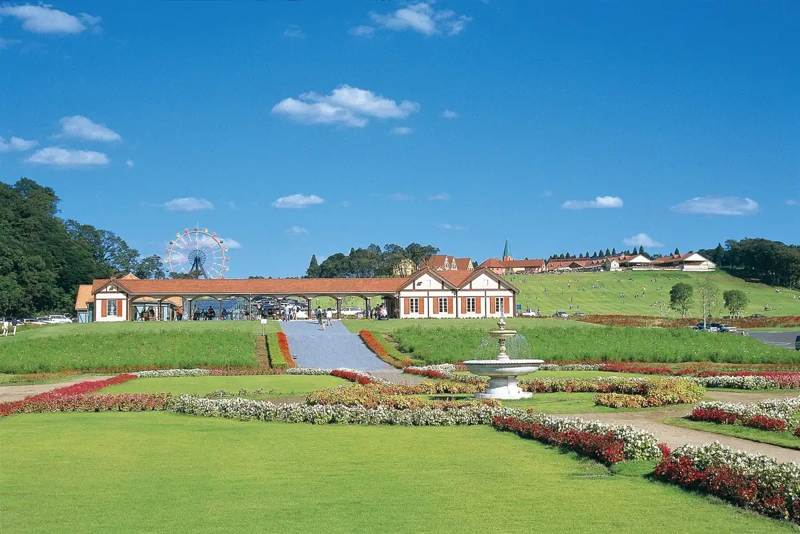
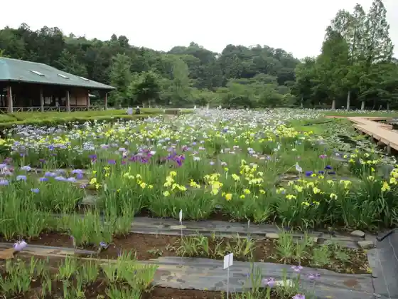
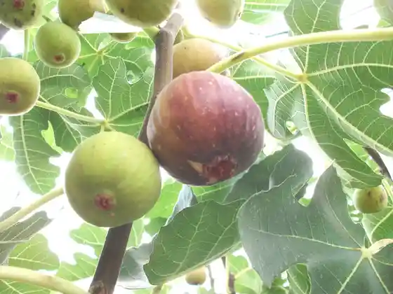
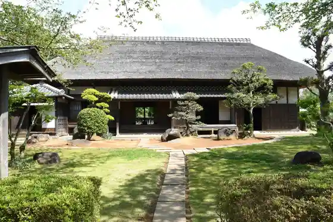

Japan / Chiba / Sodegaura
Sodegaura
Sodegaura · Chiba
Sodegaura
Highlighted on the Chiba map.

Sights
Tokyo Doitsu Village
Sodegaura, Chiba · 0438-60-5511 · Official / source link
Sodegaura Park
Sodegaura, Chiba · 0438-63-6560 · Official / source link

Guriin Farm Miki
Sodegaura, Chiba · 0438-75-3050 · Official / source link

Sodegaura Kyodo Museum
Sodegaura, Chiba · 0438-63-0811 · Official / source link

Kisetsu no Hana (Bara) / Tokyo Doitsu Village
Sodegaura, Chiba · Official / source link
Sodegaura Nochikusan Mono Chokubai Tokoro (Yuri Village)
Sodegaura, Chiba · 0438-60-2550 · Official / source link
Hyaku Megi Park
Sodegaura, Chiba · 0438-75-7277 · Official / source link
tasso Forest
Sodegaura, Chiba · 0438-38-3707 · Official / source link
Tennen Onsen Yu Mai Oto Sodegaura Mise
Sodegaura, Chiba · 0438-38-6168 · Official / source link
Kasa Ue Kannon Sei Fuku Tera
Sodegaura, Chiba · 0438-62-0343 · Official / source link
Saito Garden
Sodegaura, Chiba · 080-1171-8088 · Official / source link
Hiraoka no Sato no Village Park
Sodegaura, Chiba · 0438-75-4142 · Official / source link
ICHIGOYA SUN
Sodegaura, Chiba · 0438-75-8888 · Official / source link
Hosono Farm
Sodegaura, Chiba · 080-5025-1088 · Official / source link